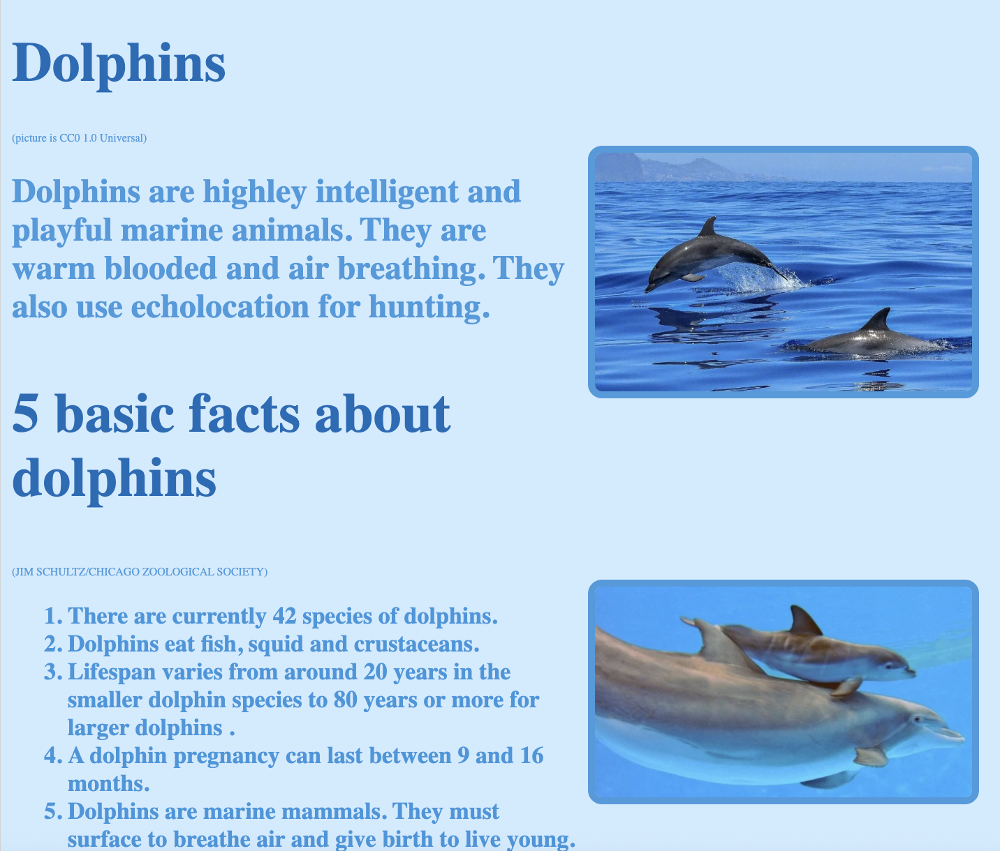

<link rel="stylesheet" href="best_work.css">
<header>
  <h3>Best work</h3>
</header>

<nav>
    <ul>
      <li><a href="growth.html">Growth</a></li>
      <li><a href="future.html">Future</a></li>
      <li><a href="index.html">About me</a></li>
      <li><a href="best_work.html">Best work</a></li>
    </ul>
  </nav>  

  <article>
    <h1>My best work </h1>
    <p>I feel that this is an example of my best work because of how much information I learned from it. Even though it's not the most impressive thing I have made in this class, I liked this project because I got to learn new things to create it. Some aspects I really like about this project are the use of HTML and how it looks. I think the colors I used are visually appealing, and I liked the new way we got to code. The way we got to code this was easier for me to do or understand than the past projects we've done. To create this project, I used my liking for marine life to research and create the website.  </p>
 
    <a href=https://codeprojects.org/projects/weblab/ef0125b3-6270-4b10-bacd-983b447f1c04">link to project</a>
    </article>
</section>